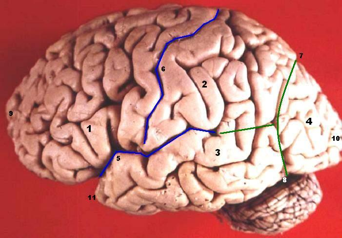

대뇌피질 (cerebral cortex)

| # | 원문 | 한국어 |
|---|---|---|
| 1 | Lobus frontalis | 이마엽(전두엽) |
| 2 | Lobus parietalis | 마루엽(두정엽) |
| 3 | Lobus temporalis | 관자엽(측두엽) |
| 4 | Lobus occipitalis | 뒤통수엽(후두엽) |
| 5 | Sulcus lateralis | 가쪽고랑(외측구) |
| 6 | Sulcus centralis | 중심고랑(중심구) |
| 7 | Sulcus parietooccipitalis | 마루뒤통수고랑 |
| 8 | Incisura preoccipitalis | 뒤통수앞패임 |
| 9 | Polus frontalis | 이마극 |
| 10 | Polus occipitalis | 뒤통수극 |
| 11 | Polus temporalis | 관자극 |
쉽게 풀면
대뇌피질은 뇌의 가장 바깥을 감싸는 얇은 층으로, 주름이 많아 좁은 두개골 안에 넓은 표면적을 담을 수 있다. 위치에 따라 전두엽·두정엽·측두엽·후두엽으로 나뉘며, 각 영역이 운동·감각·언어·시각 같은 서로 다른 기능을 담당한다. 현미경으로 보면 세포 종류와 배열이 다른 여러 층으로 이루어져 있어 정보가 층을 거치며 단계적으로 처리된다. 사람의 대뇌피질은 다른 동물에 비해 특히 발달해 있어, 계획·언어·자기 성찰 같은 고차 인지 기능의 물리적 토대로 여겨진다.
왜 중요한가
대뇌피질은 감각 입력을 통합하고 운동을 계획하며 언어와 의사결정 같은 고차 인지 기능을 구현하는 핵심 기질이기 때문에, 신경과학·인지과학·정신의학·뇌공학 등 여러 분야 논문에서 빠지지 않고 등장한다. 특정 영역이나 층의 구조적·기능적 이상이 여러 신경 및 정신 질환과 연관되어 있어, 임상 연구에서도 중요한 관심 대상이다. 최근에는 뇌-기계 인터페이스나 신경망 모델 연구에서도 피질의 회로 구조가 참고 모델로 자주 언급된다.
어디에 있고 어떻게 생겼나
- 대뇌의 바깥층을 이루는 신경 조직이다.
- 두께는 약 1.5~4 mm이며, 영역과 종에 따라 다르다.
맡은 기능
중추신경계에서 신경 정보의 통합이 가장 크게 일어나는 곳이다. 기억, 주의, 언어, 의식에 관여하는 영역이 여기에 있다.
연구에서 다루는 방식
피질 두께는 영역과 종에 따라 달라지므로, 두께를 보고할 때는 어느 영역을 잰 값인지 함께 적는다.
논문에서는 이렇게 쓰입니다
실제 논문에서
국내 학술지 논문에서 이 용어가 쓰인 문장을 그대로 옮겼다. 제목·학술지·연도와 원문 링크를 함께 적었다.
“셋째, 자기효능감에 주로 관계된 뇌 중추는 대뇌피질 중 전두엽이며, 감성 형성에 관계된 뇌 중추는 변연계의 여러 부위들이다.”
감성 개입 자기효능감의 이해와 교육적 시사점: 뇌과학적 연구 성과에 기초하여, 초등교육연구, 2017 · KCI 한국학술지인용색인 · 원문 보기 ↗
“혈액분석과 소장의 융모길이, 대뇌피질 두께 측정에서 혼합물 투여 후 방사선조사군이 비교군(방사선조사군)에 비해 유의미한 회복(p<0.05)을 보였으며, 이는 엽산과 α-토코페롤 혼합물이 해양 방사능 오염 환경에서 생체 내 방사선방호에 효과적임을 시사한다.”
해양 방사능 오염에 대비한 엽산과 토코페롤 혼합물의 방사선 방호효과에 관한 연구, 해양환경안전학회지, 2024 · KCI 한국학술지인용색인 · 원문 보기 ↗
예시 문장
아래 예문은 용어의 쓰임을 보이려고 만든 것으로, 실제 논문 문장이 아니다.
대뇌피질이 단일한 층이 아니라 여러 층으로 나뉘며, 특정 층에 특정 수용체나 세포 종류가 몰려 있을 수 있다는 것을 보여주는 문장이다.
인지신경과학 연구에서는 대뇌피질의 특정 영역들이 과제 수행 중 얼마나 함께 활성화되는지를 살펴, 뇌 영역 간 협응을 설명하는 데 활용된다.
임상·정신의학 연구에서는 MRI 등을 이용해 대뇌피질의 두께나 부피 변화를 측정함으로써 질환과의 연관성을 탐색하는 경우가 많다.
조금 더 깊게 보면
대뇌피질을 더 깊이 이해하려면 층 구조(예: 시상 입력을 주로 받는 중간층(4층)과 피질 밖으로 출력을 내보내는 심층(5·6층)의 구분) 외에도, 기능적으로 인접한 영역을 묶는 피질 영역 지도(브로드만 영역 등)와 이를 기반으로 한 구획화 논의를 함께 살펴보는 것이 도움이 된다. 최근 논문에서는 개별 영역의 활성화 여부뿐 아니라 여러 영역이 함께 이루는 네트워크나 연결성(connectivity) 지표를 통해 피질의 기능을 설명하는 경우가 많다. 두께, 표면적, 곡률 같은 형태학적 지표도 구조적 변화를 정량화하는 데 흔히 쓰이며, 이러한 지표는 발달·노화·질환에 따른 피질 변화를 비교하는 데 활용된다.
주의할 점
"피질이 활성화되었다"는 서술은 대개 특정 하위 영역이나 특정 층을 가리키는 경우가 많으므로, 논문에서 어느 부위인지 구체적으로 확인하는 것이 중요하다.
참고 문헌
- Wikipedia contributors. (n.d.). Cerebral cortex. In Wikipedia, The Free Encyclopedia.
- 위키백과. (n.d.). 대뇌피질. 위키백과.